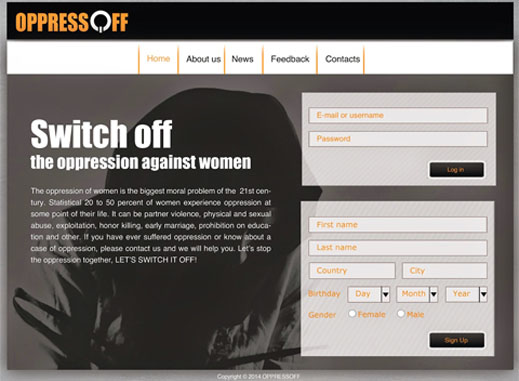
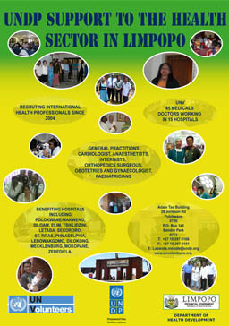

WEB DESIGN



- Project: "OPPRESSOFF"
- Description: This is the final project of my study. This project is about to make campaign based on the social problem. My socila issue was the oppression of the women in general, but focusing on the Middle East. As a part of the campaign I made logo design, design of the web-site(mockup), mobile application(also mockup), design of promotional ites, such ad poster and brochure.
- Languages: Adobe Illustrator and Adobe Photoshop
- Link: Full information about the project you can find in my blog
- Project: "UNDP Health Support Promotion"
- Description: This is design of the promotional items for the UNDP Health Support in Limpopo province in South Africa. I made this project while was working as a Graphic Design Intern for the UNDP Health Support. Those items was design to promote health program in South Africa.
- Languages: Adobe Illustrator and Adobe Photoshop
- Link: Full information about the project you can find in my blog


